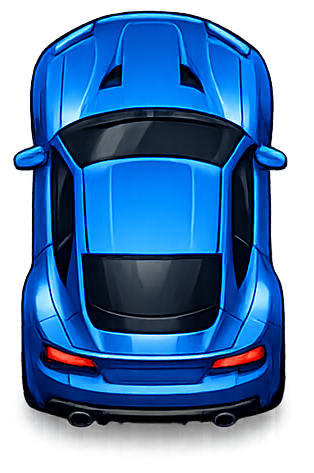
Vector GT
mass: 1.0 · maxSpeed: 168 · steering: 1.08
Activos individuales con transparencia real, proporciones normalizadas y metadatos de física.

mass: 1.0 · maxSpeed: 168 · steering: 1.08
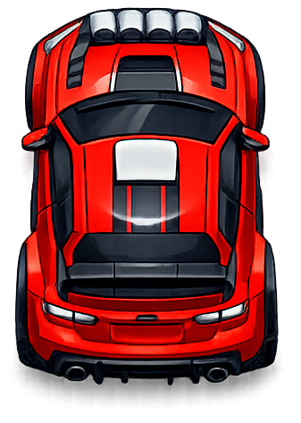
mass: 0.96 · maxSpeed: 158 · steering: 1.18
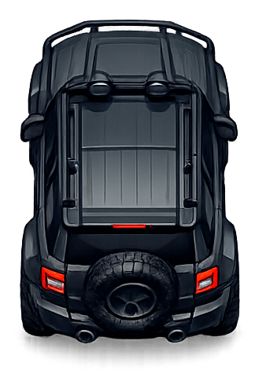
mass: 1.38 · maxSpeed: 148 · steering: 0.92
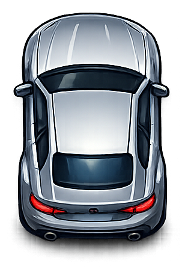
kind: sedan · mass: 1.08
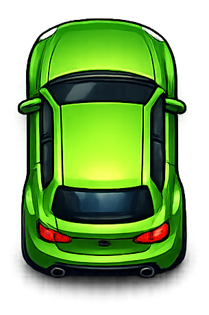
kind: sedan · mass: 1.06
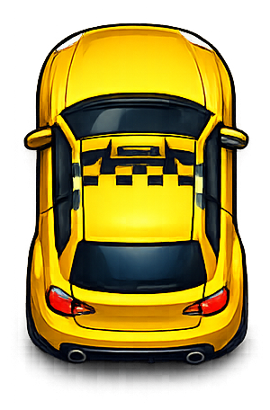
kind: police · mass: 1.12
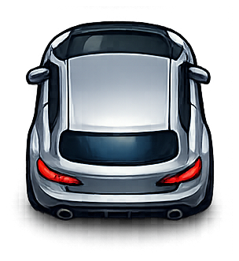
kind: coupe · mass: 0.92
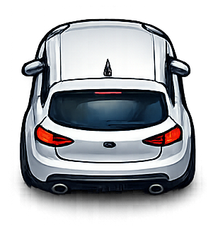
kind: sedan · mass: 1.02
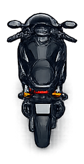
kind: motorcycle · mass: 0.44
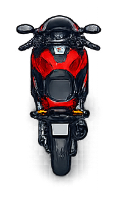
kind: motorcycle · mass: 0.44
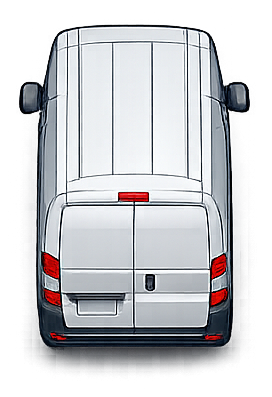
kind: bus · mass: 1.72
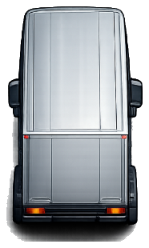
kind: truck · mass: 2.55
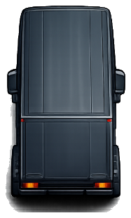
kind: truck · mass: 2.45
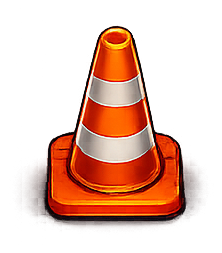
type: cones
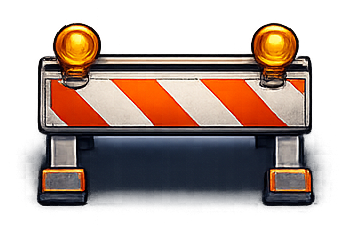
type: barrier
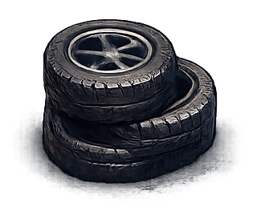
type: debris
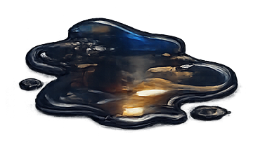
type: oil
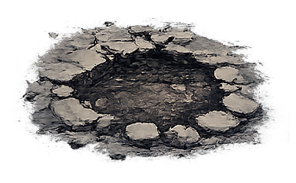
type: pothole
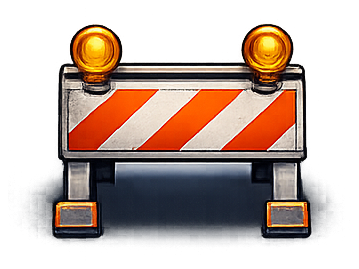
type: barrier
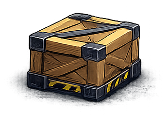
type: debris
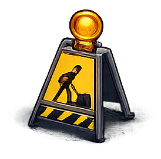
type: debris